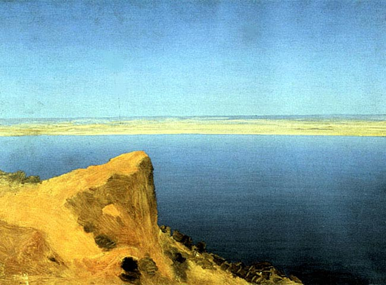
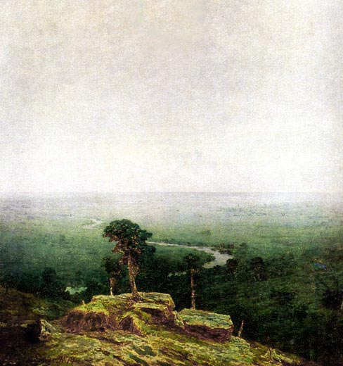
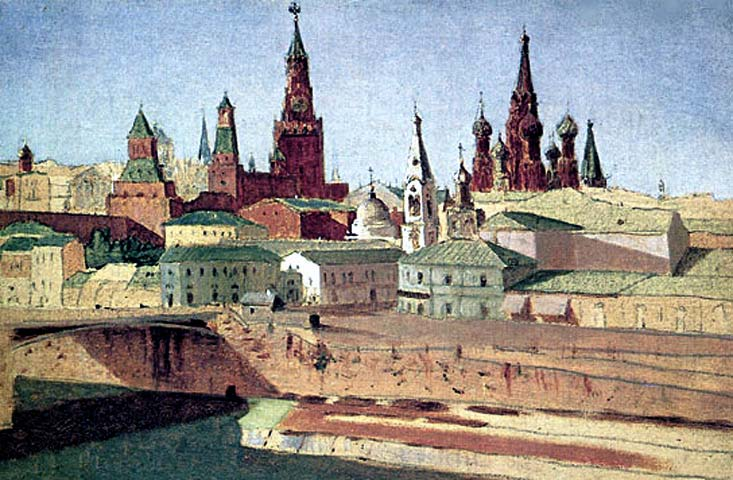

|
Архип Куинджи | |
| Архип Куинджи – известный российский художник, мастер пейзажной живописи. Рано лишился родителей. С ранних лет стала проявляться любовь к живописи. Творчество Архипа Куинджи оказало огромное влияние на Николая Рериха. Родился 15 января 1841 года в Мариуполе, скончался 11 июля 1910 года в Санкт-Петербурге. | |
| 1 - Волга, 1890-1895; 2 - Север, 1879; 3 - Вид на Кремль с Замоскворечья, 1882. | |
|
   |
|
|
email: danredtu1103@mail.ru |